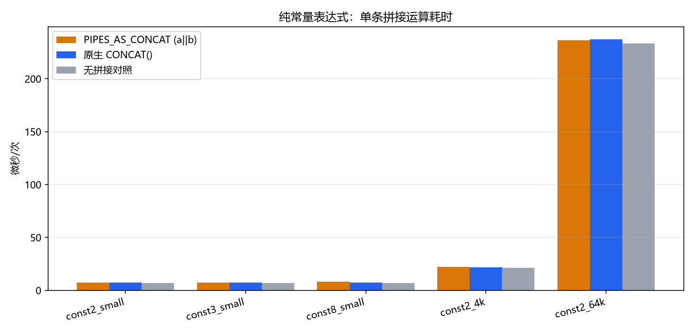
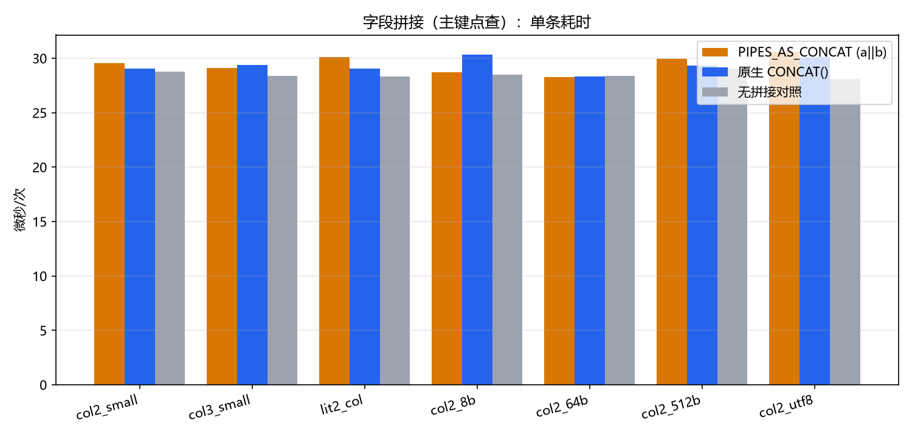
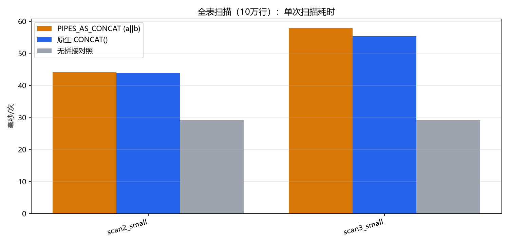
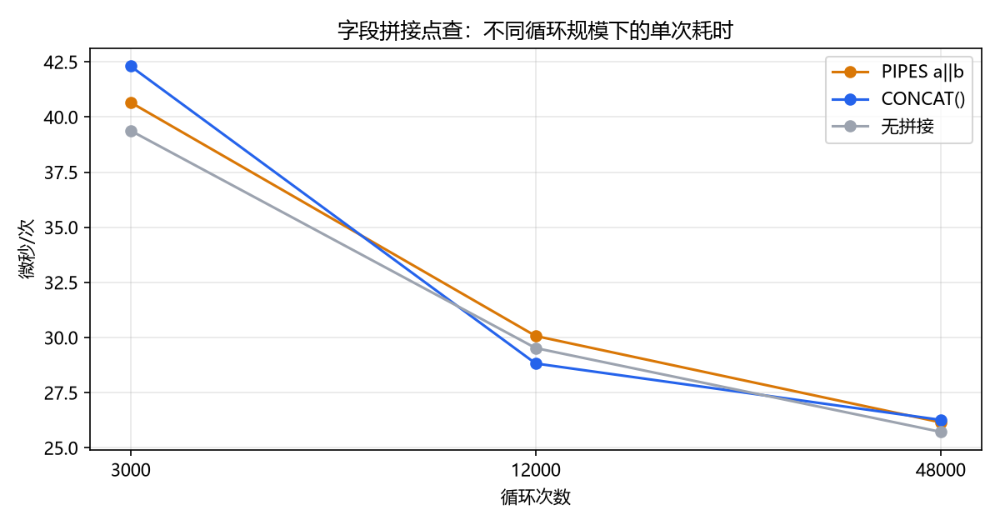
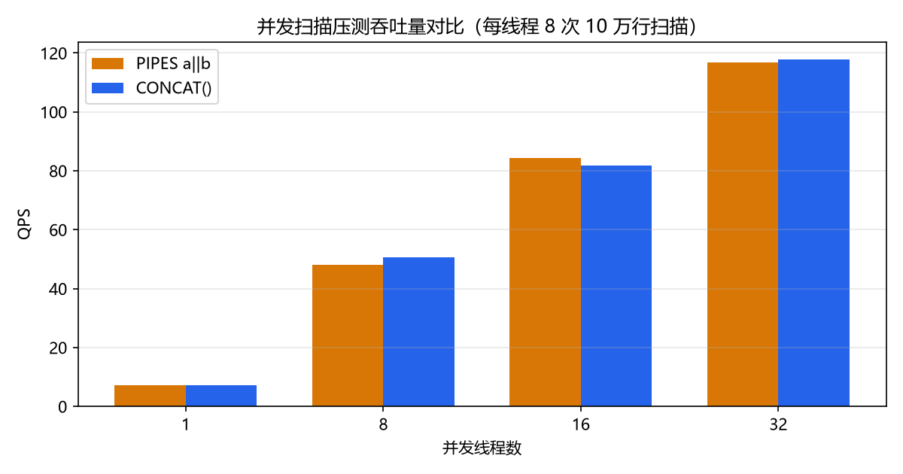
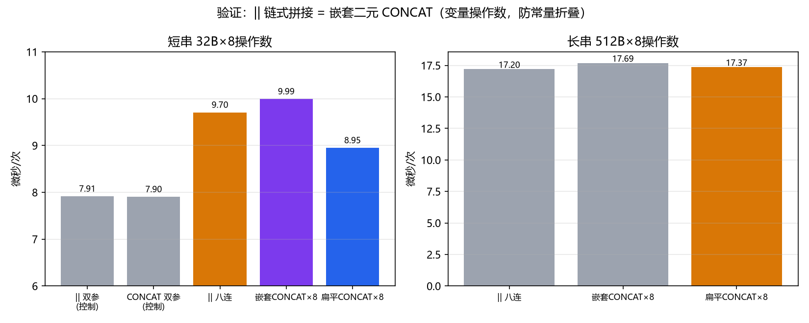

MySQL sql_mode=PIPES_AS_CONCAT 性能影响分析验证报告
- 测试日期：2026-09-03
- 测试人：DarkAthena
- 更新：2026-09-03 补充 §5.7（
||链式拼接展开方式的源码与实验验证）、§5.8（金融证券业务风险场景实测）、§5.9（ORM 方言处理调研）；并根据同行评审意见修订：§5.4 归因（RTT 分摊而非预热）、§5.1 拼接净边际口径、行数/过程数等事实性数据、§5.8 用例 1/3 描述；第二轮评审：RTT 采样固化为 60 轮×20 次并记录采样参数、§3.2/§3.3 交叉引用更正、「链式比较」措辞精确化、§5.5 payload 表述更正；第三轮评审：RTT 生成入口固化（bench_rtt.py，ping 一并留念），全文 RTT 口径统一为 ≈50ms 并重算 §5.4 扣除表 - 数据库：MySQL Community Server 8.0.11（Docker，192.168.163.227:3307）
1. 摘要
本次通过服务端存储过程循环计时（消除网络往返干扰）＋客户端大结果集/并发压测，共执行 200 万+ 次拼接运算，覆盖 2/3/8 操作数、字段拼字段、常量拼字段、8B~64KB 拼接长度、10 万行全表扫描、1~32 并发等场景。核心结论：
PIPES_AS_CONCAT 对运行时性能的影响可以忽略（绝大多数场景差异 <5%，且在 Run-to-Run 噪声范围内）。真正消耗 CPU 的是"拼接"这个动作本身（内存分配与拷贝），而不是
||这个语法入口。
另外一个比性能更重要的工程发现：MySQL 存储过程/函数会绑定创建时刻的 sql_mode，调用方的会话 sql_mode 对例程内的表达式不生效，迁移改造时必须重建例程，否则会留下语义炸弹（详见 §3.2、§7）。
2. 背景与原理
PIPES_AS_CONCAT 开启后，MySQL 将 || 运算符从逻辑 OR 重新解释为字符串拼接，用于兼容 Oracle/PostgreSQL 的写法：
-- 默认模式
SELECT 'a' || 'b'; -- 0（逻辑 OR：'a'→0，'b'→0，即 0 OR 0 = 0）
-- PIPES_AS_CONCAT
SET sql_mode = '...,PIPES_AS_CONCAT';
SELECT 'a' || 'b'; -- 'ab'
从实现层面，|| 在解析阶段即被重写为 CONCAT() 内部表达式树，其类型推导、字符集聚合、NULL 传播规则与 CONCAT() 完全一致（本次已逐一实测验证，见 §6.1）。因此预期的性能特征为：
- 解析/重写开销：一次性的，只在 prepare/optimize 阶段发生；
- 求值开销：与
CONCAT()共用同一条代码路径，理论上无差别； - 需要关注的其实是拼接本身的代价：结果字符串的内存分配、拷贝、char_length 换算，以及结果集 payload 变大带来的网络与临时表压力。
3. 测试设计
3.1 网络开销的消除（关键方法）
实测链路 RTT 情况：
| 指标 | 值 |
|---|---|
| ping 延迟 | 52~56ms（均值 54ms；4 次，记录于 env.json） |
SELECT 1 应用层往返（60 轮×每轮 20 次采样，每轮独立连接、每轮取均值作为样本；采样参数与原始值记录于 env.json，由 scripts/bench_rtt.py 生成） | min 46.8ms / median 49.9ms / p95 53.7ms |
单次拼接运算的服务端耗时是微秒级的，约 50ms 的往返噪声比它大 4 个数量级。客户端逐条循环测短 SQL 完全不可行。因此采用以下方法：
| 维度 | 方法 |
|---|---|
| 单条表达式/点查耗时 | 服务端存储过程内部循环 N 次（SELECT <expr> INTO trash），全部计算在服务端完成，客户端只测 CALL 总时长（1 次往返；计时窗口按用例成本标定在 0.3~7.1s，约 50ms 的 RTT 在核心用例占比最高约 16% 且为固定偏移，组间对比互抵；n 较小的规模维度场景已按 RTT 分摊定量扣除，见 §5.4） |
| 全表扫描 | 存储过程外层循环 × SELECT SUM(CHAR_LENGTH(...)) 聚合（结果不回客户端） |
| 结果集传输维度 | 客户端 fetchall 拉取完整结果集，此时网络是被测对象之一，刻意保留 |
| 基线对照 | 每个用例配"无拼接"对照组（同形状 SQL、同数据路径），隔离拼接的边际开销 |
| 重复性 | 核心用例 3 轮取最小值；规模/传输维度 2~3 轮取最小值；规模维度按 3k/12k/48k 循环数交叉验证 |
3.2 一个绕不开的坑：存储过程 sql_mode 绑定（实测验证）
MySQL 会记录创建时的 sql_mode，并在每次 CALL 时切换到该模式执行，与调用方会话的 sql_mode 无关。实测：
-- PIPES 模式下创建的过程
CREATE PROCEDURE p_bind_test() SELECT 'a' || 'b' AS r;
-- 切回默认模式调用 → 仍返回 'ab'
-- 默认模式创建的过程
CREATE PROCEDURE p_bind_test2() SELECT a || b AS r FROM t_bind; -- a=1,b=1
-- 切到 PIPES 模式调用 → 仍返回 1（逻辑 OR 的结果）！
这意味着：
- 测试方法论上，
||版与CONCAT()版过程必须分别在两种 sql_mode 会话下创建，保证解析行为固定、不受调用时模式干扰（本次 42 个基准过程：PIPES 会话创建 14 个||版，默认会话创建 14 个CONCAT()版 + 14 个对照版，均按此处理）； - 生产上，开启/关闭 PIPES_AS_CONCAT 不会即时改变已有存储过程的语义，必须 DROP + CREATE 重建才能生效（反过来，升级脚本对例程的改造也可能悄悄"锁死"旧语义）；
- 同一系统里两个会话看到同一过程返回不同数据形态的风险存在——迁移改造切记全量重建例程。
3.3 对比组设计
| 组 | 表达式形态 | 创建/调用 sql_mode |
|---|---|---|
| PIPES | a || b（|| 写法） | 默认 + PIPES_AS_CONCAT |
| CONCAT | CONCAT(a, b) | 实例默认（不含 PIPES_AS_CONCAT） |
| 对照 | 无拼接的相同 SQL | 两种模式等价（|| 不出现） |
其余 sql_mode 保持实例默认值：ONLY_FULL_GROUP_BY,STRICT_TRANS_TABLES,NO_ZERO_IN_DATE,NO_ZERO_DATE,ERROR_FOR_DIVISION_BY_ZERO,NO_ENGINE_SUBSTITUTION。
注：默认模式下 a || b 是逻辑 OR，不能与拼接语义同 SQL 对比；故"PIPES 开 vs 关"的性能对比只能通过"同语义的 || vs CONCAT()"两条等价路径进行——这恰好也是迁移改造时 SQL 改造前后的真实对比。
3.4 测试数据（合计约 31MB，全部缓存在 128MB buffer pool 内）
| 表 | 行数 | 列 | 用途 |
|---|---|---|---|
| t_small | 100,000（information_schema.TABLES.TABLE_ROWS 估算值为 99,324，实测 COUNT(*)=100,000） | c1/c2/c3 VARCHAR(32)，MD5 值 | 字段拼接、扫描 |
| t_len | 20,000 | v8/v64/v512 | 拼接长度维度 |
| t_utf8 | 50,000 | u1/u2 utf8mb4 中文 | 多字节字符维度 |
| t_bind | 1 | int | sql_mode 绑定验证 |
4. 环境信息
| 项 | 值 |
|---|---|
| 版本 | MySQL 8.0.11（Community，Linux 容器） |
| 字符集 | utf8mb4 / utf8mb4_0900_ai_ci |
| InnoDB buffer pool | 128MB（测试数据全量可缓存） |
| max_connections | 151；performance_schema ON |
| 客户端 | Windows + PyMySQL 2.2.8，RTT ≈50ms |
| 测试库 | concat_bench（独立库，含 42 个基准过程 + 8 个嵌套验证过程 + 2 个 sql_mode 绑定验证过程） |
5. 测试场景与结果
5.1 A组：纯值表达式（常量与 REPEAT() 生成的长值，无表访问，循环 3~5 万次；对照组为同长度不拼接表达式）
| 用例 | PIPES || | CONCAT() | 无拼接对照 | PIPES vs CONCAT |
|---|---|---|---|---|
| 2 操作数（12B） | 7.454 μs | 7.159 μs | 6.895 μs | +4.1% |
| 3 操作数 | 7.223 μs | 7.164 μs | 6.784 μs | +0.8% |
| 8 操作数 | 8.383 μs | 7.463 μs | 6.784 μs | +12.3% |
| 2 操作数（4KB） | 22.31 μs | 21.83 μs | 21.25 μs | +2.2% |
| 2 操作数（64KB） | 236.4 μs | 237.5 μs | 233.5 μs | −0.5% |

解读：
- 拼接的净边际开销（相对同构对照组）随结果长度温和增长：12B +0.56μs、4KB +1.06μs、64KB +2.96μs。真正的拼接成本（内存分配+拷贝）始终很小，与语法入口无关；长串用例的总耗时（22/236μs）大头是
REPEAT()求值与缓冲区操作，对照组不拼接同样承担（21.25/233.5μs），不能归因到拼接头上——该口径与 §5.7 长串实验（三者趋平）互为印证； ||相对CONCAT()的差距普遍 <1μs/次；唯一明显点出现在 8 操作数（+0.9μs/+12%）。该差异已从源码与实验两个层面落实：||链在解析器里被展开为嵌套二元 CONCAT，而多参数CONCAT()是单个函数调用，详见 §5.7；但绝对值仍在亚微秒级；- 64KB 大串场景两者完全持平——注意这只能说明拼接入口无差异；长串总耗时被
REPEAT()长值生成与缓冲区操作主导，拼接边际（~3μs）占比仅 1% 量级，不可见。
5.2 B组：字段拼字段（主键点查，t_small 100k 行 × 1.2 万次循环）
| 用例 | PIPES || | CONCAT() | 无拼接对照 | PIPES vs CONCAT |
|---|---|---|---|---|
| c1||c2（2 列 32B） | 29.56 μs | 29.04 μs | 28.79 μs | +1.8% |
| c1||c2||c3（3 列） | 29.14 μs | 29.41 μs | 28.40 μs | −0.9% |
| 常量||列 | 30.13 μs | 29.06 μs | 28.34 μs | +3.7% |
| v8||v8 | 28.74 μs | 30.31 μs | 28.48 μs | −5.2%（噪声） |
| v64||v64 | 28.30 μs | 28.33 μs | 28.36 μs | −0.1% |
| v512||v512 | 29.93 μs | 29.33 μs | 29.03 μs | +2.1% |
| u1||u2（utf8mb4 中文） | 30.62 μs | 30.09 μs | 28.10 μs | +1.8% |

解读：
- 点查场景绝对大头是行获取（buffer pool 命中+字段解码）≈28.5μs，拼接只贡献 0.3~1.3μs，占比 <5%；
- 各长度档（8B~512B）下
||与CONCAT()互有胜负且都在噪声带内——可以认为完全等价； - 中文 utf8mb4 与 ASCII 无显著差异（本例均为同序 utf8mb4_0900_ai_ci，字符集聚合无额外换算）。
5.3 C组：全表扫描（10 万行，聚合不返回数据，外层循环 20 次取均值）
| 用例 | PIPES || | CONCAT() | 无拼接对照 | PIPES vs CONCAT |
|---|---|---|---|---|
| SUM(LENGTH(c1||c2)) | 44.07 ms | 43.77 ms | 29.12 ms | +0.7% |
| SUM(LENGTH(c1||c2||c3)) | 57.82 ms | 55.34 ms | 29.06 ms | +4.5% |

解读：
- 拼接本身的成本在扫描场景才真正可见：10 万行加一次双字段拼接，扫描从 29ms → 44ms（+51%）；三字段 → 57ms（+99%）。拼接 ≈ 15ms/10万行 ≈ 0.15μs/行/次拼接，与 A 组短串边际开销吻合；
||与CONCAT()差距 ≤4.5%，属临界噪声；真正要省性能，应该减少拼接次数或下推/物化，而不是纠结语法形态。
5.4 D组：规模稳定性（多轮不同循环次数）
| 循环次数 | PIPES μs/op | CONCAT μs/op | 对照 μs/op |
|---|---|---|---|
| 3,000 | 40.66 | 42.30 | 39.38 |
| 12,000 | 30.07 | 28.82 | 29.52 |
| 48,000 | 26.15 | 26.26 | 25.72 |

解读：PIPES 与 CONCAT 两组在三档规模下始终贴合。三档原始 per-op 的差异完全由 CALL 往返固定开销（≈50ms）随循环次数摊薄造成，与所谓预热无关（MySQL 8.0 存储过程为解释执行，也不存在 JIT）。以 PIPES 组为例、按 RTT 中位数 49.9ms 扣除后：
| 循环次数 n | 原始 μs/op | 49.9ms 分摊 | 扣除 RTT 后 μs/op |
|---|---|---|---|
| 3,000 | 40.66 | 16.6 | 24.0 |
| 12,000 | 30.07 | 4.2 | 25.9 |
| 48,000 | 26.15 | 1.0 | 25.1 |
扣除后三档高度一致（CONCAT 与对照组同样如此，均落在 23~26μs），说明单位耗时与循环规模无关，无"规模放大后 PIPES 劣化"的迹象。同时这也是方法学边界的一个好的证明：n 较小时 RTT 占比显著升高（n=3,000 时约 40%），跨规模比较必须先扣除固定往返开销，直接比较原始值会得出错误结论。
5.5 E组：结果集传输维度（客户端拉取 10 万行）
| 查询形态 | 最佳耗时 |
|---|---|
SELECT c1,c2,c3（3 列不拼） | 3,126 ms |
SELECT c1 || '-' || c2 || '-' || c3 | 2,564 ms |
SELECT CONCAT(c1,'-',c2,'-',c3) | 3,517 ms |
解读：约 10MB 结果在约 50ms RTT 链路上跑 2.5~3.5 秒，传输时间与拼接方式完全脱钩（该维度两次运行间波动比两种语法差异还大）。顺带观察到拼成单列后耗时反而略低，但这不是 payload 变小：按 MySQL 文本行协议，3 列×32B 与单列 98B 的逐行 payload 相同（值 + 长度前缀均约 99B/行），差异仅在于结果集头部少 2 个列定义包（一次性、百字节级），不足以解释 500ms 级波动，应归为运行噪声。收益不确定，不建议作为优化手段。
5.6 F组：并发压测（每线程 8 次 10 万行扫描）
| 线程数 | PIPES QPS | CONCAT QPS |
|---|---|---|
| 1 | 7.1 | 7.2 |
| 8 | 48.1 | 50.7 |
| 16 | 84.3 | 81.9 |
| 32 | 116.7 | 117.8 |

解读：1~32 并发下两组吞吐曲线完全拟合，CPU 争用不会放大 || 的微小差异。
5.7 G组：|| 链 = 嵌套 CONCAT 的落实验证（§5.1 异常点溯源）
源码层证据（MySQL 8.0.11 源码）：
- 词法层
sql/sql_lex.cc:831-834：扫描到||时按会话 sql_mode 发不同 token——开启 PIPES_AS_CONCAT 时返回OR_OR_SYM，否则返回OR2_SYM（进入逻辑 OR 规则）：if ((symbol->tok == OR_OR_SYM) && !(lip->m_thd->variables.sql_mode & MODE_PIPES_AS_CONCAT)) return OR2_SYM; - 语法层
sql/sql_yacc.yy:9215-9218：simple_expr OR_OR_SYM simple_expr每次归约只构造一个二元Item_func_concat：| simple_expr OR_OR_SYM simple_expr { $$= NEW_PTN Item_func_concat(@$, $1, $3); } - 结合性
sql/sql_yacc.yy:1240：%left OR_OR_SYM ...左结合 →a||b||...||h归约为CONCAT(CONCAT(...(a,b)...),h)，7 层嵌套；而CONCAT(a,...,h)是单个 8 参数调用。
行为层验证：把操作数全部换成本地变量（彻底排除常量折叠影响），对比四种形态（各 3 轮取最小）：
| 形态 | 32B 短串 μs/次 | 512B 长串 μs/次 |
|---|---|---|
v1||v2（2 操作数控制组） | 7.913 | — |
CONCAT(v1,v2)（2 操作数控制组） | 7.902 | — |
v1||...||v8（8 连 ||） | 9.704 | 17.20 |
| 手写 7 层嵌套 CONCAT | 9.991 | 17.69 |
扁平 CONCAT(v1,...,v8) | 8.947 | 17.37 |

解读：
- 2 操作数控制组完全相等（差 0.14%），说明
a||b与CONCAT(a,b)就是同一个Item_func_concat； - 8 操作数下 8 连
||≈ 手写 7 层嵌套（9.70 vs 9.99μs，差 2.9% 噪声内），均明显慢于扁平 CONCAT（8.95μs）——假设坐实：差距来自函数调用深度（7 层嵌套逐层 fix_fields/求值/类型聚合），而非单个拼接更慢； - 长串（512B）下三者趋平：逐层中间串的额外拷贝在现代内存带宽下仅约 0.3μs，占比过小，短串时函数调用开销才是主要矛盾；
- 附带一个重要语法细节：拼接规则定义在
simple_expr产生式内，使得拼接态||的实际结合优先级高于比较运算符与 AND/OR（与%left声明的观感相反）。探针实测：SELECT 1 = 1 || 2返回 0，即解析为二元比较1 = (1||2)（右侧拼接为'12'，1 = '12'不成立）；而默认的 OR 语义下同一 SQL 解析为(1=1) OR 2，结果为 1。这意味着含||的谓词在切换模式后不仅语义变、括号结构也变（被重新分组），风险比想象中大（见 §5.8 用例 1/5）。
工程含义：多字段拼接若追求极限性能，改写为扁平 CONCAT(a,b,c,...) 可同时消除语义与性能两处差异；但差距量级为亚微秒/次，且仅在 ≥4 级链式拼接时出现，常规业务无需为此改写存量 SQL。
5.8 H组：金融证券业务场景下的 || 风险（已实测）
以下用例全部在测试库 concat_bench 中按两种模式真实执行，表结构：委托表 t_order（资金账号/营业部号/子账户序号/委托金额/委托数量/状态）、清算表 t_settle（本息 DOUBLE）。
用例 1：风控告警查询——谓词被重新分组，结果静默漂移
-- 意图：大额委托 或 状态异常的委托
SELECT COUNT(*) FROM t_order
WHERE amount > 500000 || order_status = 'X';
| 模式 | 实测结果 | 机理 |
|---|---|---|
| 默认 | 2，命中 {1, 2}（正确：1 笔大额 + 1 笔异常） | (amount>500000) OR (order_status='X') |
| PIPES | 3，命中 {2, 3, 4}：不仅多召回 3、4 两笔小额委托，而且漏掉了唯一的大额委托（order_id=1，60 万元） | 拼接态 || 优先级高于比较运算符，实际解析为 (amount > (500000||order_status)) = 'X'（MySQL 比较运算为左结合的二元运算，先算左侧比较再与 'X' 比较），已用等效 SQL 逐行验证吻合 |
告警规则从 SQL 迁移/下发时一旦发生模式漂移，风控漏报/误报且不会报错——对风控而言，漏掉唯一一笔大额委托的后果远比误报小额严重。
用例 2：主键拼接（清算对账编号）——OR 值写入对账字段
SELECT order_id, branch_no || acct_no AS full_acct FROM t_order;
| 模式 | 实测结果 |
|---|---|
| 默认 | 1（所有行 full_acct = 1，逻辑 OR 值） |
| PIPES | 0188001234（营业部+资金账号拼接） |
Oracle 迁移过来的对账 SQL 拿到默认模式 MySQL 上执行不报错、每行返回 1——对账编号全乱但流程照跑。反向同理：默认模式的过滤写进 PIPES 会话则返回拼接字符串。
用例 3：三要素账号拼接——NULL 传播导致整行主键丢失
SELECT order_id,
acct_no || '-' || branch_no || '-' || acct_seq AS k FROM t_order;
PIPES 模式实测：三笔正常返回（88001234-01-01 / 88001235-01-01 / 88001237-01-02，各不相同），子账户序号为 NULL 的第 3 笔整串变 NULL。对账文件出现空关键字/漏行。补救：CONCAT_WS('-', ...) 自动跳过 NULL，与 ||/CONCAT 语义不同，迁移时不能无脑替换。
用例 4：清算差异描述拼接——DOUBLE 精度污染监管报送
SELECT acct_no, '息差:' || (principal - 15000000) AS d
FROM t_settle WHERE acct_no = '88001234';
PIPES 模式实测返回 息差:0.7400000002235174。本意是 0.74 元的文字说明，DOUBLE 存储的本金做差后浮点尾差被拼接直接固化进展示文本；金额字段应用 DECIMAL，拼接前显式 CAST(... AS DECIMAL(18,2)) 或 FORMAT()。
用例 5：比较与逻辑混排——结果集直接清空
SELECT order_id, qty FROM t_order
WHERE order_status = 'X' || qty > 5000;
| 模式 | 实测结果 |
|---|---|
| 默认 | 2 行（正确） |
| PIPES | 0 行（实际解析为 (order_status = ('X'||qty)) > 5000，逐行验证吻合，恒不成立） |
告警/稽核类查询直接返空，比多返更隐蔽——因为“查不到问题”本身就是问题。
小结：用例 1/5 揭示的括号重组是最危险的一类——SQL 文本没变、不报错，结果集却按照另一套括号逻辑计算；用例 2/3/4 则是迁移改造时最常见的事故形态。
5.9 I组：ORM 框架对 MySQL || 语义的处理（调研）
问题：“ORM 会不会把数据库识别成 MySQL 却错误使用 || 语义？”核查结论：主流 ORM 的方言层都把 MySQL 正确渲染为 CONCAT() 函数调用，反而不会用 ||：
| 框架 | 拼接的渲染方式 | 证据 |
|---|---|---|
| Django | ConcatPair.as_mysql() 显式走 CONCAT(...) 函数，仅 SQLite 等后端用 || | django 1.8 django/db/models/functions.py 源码 |
| SQLAlchemy | MySQL方言将 concat 运算符编译为 CONCAT()；|| 仅用于 PG/SQLite/Oracle 方言 | 方言编译器实现 |
| Hibernate/JPQL | JPQL 标准拼接符是 ||，但方言层按目标库翻译，MySQLDialect 渲染 concat(...) | 官方方言架构 |
| jOOQ | DSL.concat() 按方言渲染，MySQL → CONCAT() | 官方文档 |
真正的踩坑点不在“识别成 MySQL”，而在 ORM 管不着的通道：
- Native SQL / MyBatis XML（金融存量最常见）：
@Query(nativeQuery = true)、MyBatis XML、text()、literal_column()都绕过方言翻译直发服务端。Oracle 迁移项目把'01' || acct_no抄进 XML，唯一“省事”方案就是开 PIPES_AS_CONCAT——这类存量代码正是本报告 §5.8 风险的高发区。 - 方言自动识别错配（经中间件或兼容库时）：Hibernate 6 自动方言从 JDBC metadata 推断。经 ShardingSphere-Proxy、MyCat 或连接 TiDB/OceanBase（MySQL 模式租户）时，上报的都是“MySQL”，但服务端对
||的解释不同：ShardingSphere 用自己的 SQL 解析器按 MySQL 方言把||判成 OR；OceanBase 的sql_mode有自己独立的实现与取值范围。ORM 渲染的 CONCAT 依旧安全，但任何绕过 ORM 的原生拼接 SQL 在经过这些链路时语义不可移植。 - 连接池/读写分离下的 sql_mode 漂移：主库参数组开了 PIPES、报表从库没开（或连接串
sessionVariables不一致），连接池随机命中两套语义，表现为“时好时坏”的灵异 bug——这也是建议用SET PERSIST统一持久化并做全节点巡检的原因。
结论：升级 ORM 解决不了 || 风险，唯一的根治手段是全量排查直发 SQL（含 XML、存储过程、视图、触发器、事件、调度脚本）并统一各节点 sql_mode。
6. 正确性旁证（开启后行为是否忠实）
6.1 语义一致性
| 检查项 | 结果 |
|---|---|
'a' || 'b' | 'ab' ✓ |
1 || 'a' | '1a'（隐式转字符串）✓ 与 CONCAT 一致 |
'x' || NULL | NULL ✓ 与 CONCAT 一致 |
| CHARSET/COLLATION 聚合 | 常量、列、utf8mb4 中文场景均与 CONCAT 完全一致（utf8mb4 / utf8mb4_0900_ai_ci）✓ |
6.2 需要警惕的功能性风险
WHERE a || b在开启后语义从逻辑 OR 变成拼接，而残留拼接串在布尔上下文中按前导数字转数值判断真假（'abc'→0 为假、'1abc'→1 为真），判断结果几乎任意——历史 SQL 一旦混入这种写法会静默错查。开启前必须全量扫描 SQL（含视图、触发器、存储过程、事件）确保无歧义用法；已有的例程还需重建（§3.2）。
7. 结论与建议
- 性能结论：放心开。
PIPES_AS_CONCAT只在解析期多一次重写，求值与CONCAT()同路径；在 2~8 操作数、8B~64KB 长度、点查/扫描/并发、小中大规模的全部组合下，||与CONCAT()差异普遍 ≤5%、绝大多数在噪声带内；唯一可复现的例外是 ≥4 级链式拼接（嵌套 CONCAT 展开所致，机制与数据见 §5.7），极限差距 8~12%，但绝对值仅亚微秒/次。不存在"PIPES_AS_CONCAT 拖慢数据库"的问题。 - 拼接本身才是成本：短串净边际 ~0.6μs/行，64KB 大串的拼接净边际也仅 ~3μs/次（长串总耗时的大头是
REPEAT()求值，不是拼接本身）；但在全表扫描下拼接被逐行放大——10 万行扫描加一次拼接的增量成本 ≈+51%。优化方向永远是少拼、短拼、结果物化，与 sql_mode 无关。 - 工程上的真正风险是语义而非性能（§5.8 全部实测复现）：
- 历史
||（OR 语义）SQL 会被静默改变——且不仅仅是 OR 变拼接，拼接态||优先级高于比较运算符，谓词括号会被重新分组，结果集静默漂移而不报错，开启前必须全量排查； - 拼接的 NULL 传播（整串为 NULL）、DOUBLE 精度污染、对账主键完整等问题需按场景加固（
CONCAT_WS、CAST）； - 存储过程/函数/触发器/视图绑定创建时 sql_mode——切换模式后必须重建才能生效；
- 主流 ORM（Django/SQLAlchemy/Hibernate/jOOQ）对 MySQL 正确渲染
CONCAT()，风险集中在 native SQL / MyBatis XML 等绕过方言的直发通道，以及经中间件/兼容库（ShardingSphere、TiDB、OceanBase）时的方言识别错配（§5.9）； - 建议在 VM/容器镜像层的初始化脚本里统一
SET GLOBAL sql_mode并持久化（SET PERSIST），并巡检全部从库/代理节点，避免节点间配置漂移。
- 历史
- 适用建议：Oracle/PostgreSQL 迁移场景、ORM 生成
||的场景可直接开启；新项目更推荐显式写CONCAT()（可移植、无模式依赖）。
8. 复现方法
scripts/
dbutil.py # 连接配置、RTT 测量、客户端 bench 工具
setup.py # 建库装数（seq/t_small/t_len/t_utf8）
verify.py # 语义与 sql_mode 绑定验证
build_procs.py # 构建 42 个基准存储过程（按模式成对：PIPES 14 + 默认 28）
calibrate.py # 循环次数标定
bench_core.py # 核心场景（服务端循环计时）
bench_extra.py # 规模/传输/并发
verify_nested.py # §5.7 嵌套CONCAT验证实验
demo_finance_risks.py # §5.8 金融风险场景实测
make_charts.py # 生成图表
data/
env.json / results_core.json / results_extra.json
9. 附录：原始数据
| 文件 | 内容 |
|---|---|
../data/results_core.json | 14 个用例 × 3 变体 × 3 轮完整计时 |
../data/results_extra.json | 规模/传输/并发原始结果 |
../data/results_nested.json | §5.7 嵌套验证原始结果 |
../data/results_finance_risks.json | §5.8 金融风险场景两种模式逐行结果 |
../data/env.json | 实例参数与 RTT 基线 |
测试脚本及结果数据打包下载：
PIPES_AS_CONCAT-test-scripts.zip